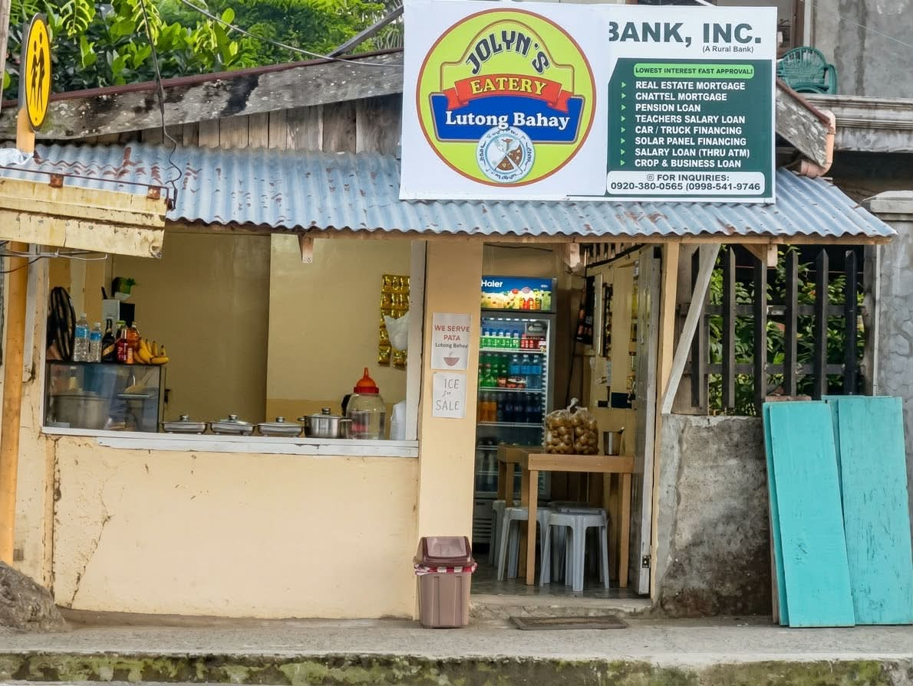
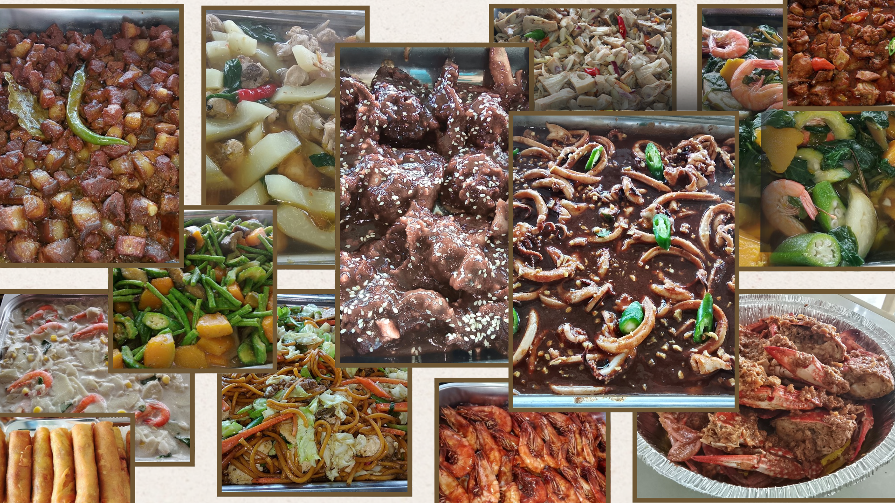

Our Story
Jolyn's Eatery began in Poblacion, San Rafael, Iloilo with a clear goal: serve comforting, home-cooked Filipino meals that feel like eating at home. Whether you are dining in, placing a short order, or having food delivered, every plate is prepared with care and heart.
Cleanliness, proper hygiene, and sanitation come first in our kitchen. Every dish is prepared with the same love and attention a mother gives her family—giving everyday guests hearty meals they can trust.

Poblacion, San Rafael, IloiloMeet the Owner
Led by Lovie Sobrevega, Jolyn's Eatery is built on warm hospitality, honest pricing, and the belief that good food brings people together.
Best-Selling Products
Home-cooked favorites loved by regular diners:
- Pork Adobo Best Seller
- Pork Sisig Best Seller
- Buffalo Wings
- Chicken Adobo
- Ginataang Labong
- Gulay w/ Fresh Shrimp
Our Values
- Hygiene & Cleanliness: Safe, tidy food prep every single day.
- Heart & Care: Cooking with the warmth of home.
- Affordability: Filling meals at budget-friendly prices.
Operating Hours
| Day | Hours |
|---|---|
| Monday – Saturday | 5:00 AM – 7:00 PM |
| Sunday | Closed |
A Glimpse of Our Dishes
Freshly cooked pans and platters from our kitchen—featuring classic comfort favorites and hearty viands.

Freshly prepared lutong bahay favorites